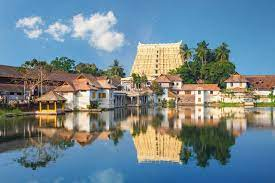

THIRUVANANTHAPURAM
Trivandrum is popular for the Padmanabhaswamy Temple, backwaters, and beaches. The place is known for its lively vibe and serene landscapes.After forming the Travancore kingdom, Maharaja Marthanada Varma dedicated it to Lord Padmanabha, the presiding deity of Shri Padmanabhaswamy temple and named the city 'Thiruvananthapuram'. The word 'Thiruvananthapuram' is derived from the Malayalam word thiru- anantha-puram, which means 'City of Lord Ananta'.